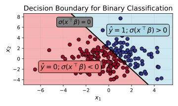

Lecture 3: Introduction to Learning (Cont.), Classification, Logistic Regression
Learning Objectives
By the end of this lecture, you will be able to:
- Define the log-odds statistical model for binary classification, and justify its advantages
- Derive logistic regression through MLE and ERM
- Construct predictions for classifiers based on different notions of risk
Supervised Learning for Classification: Statistical Perspective
In the previous lecture, we developed a statistical perspective of the supervised learning procedure, and we worked through the steps of the learning procedure in a regression context.
| Step | CS Perspective | Statistical Perspective | Example: Linear Regression |
|---|---|---|---|
| 2 | Hypothesis Class | Statistical Model | \(\mathbb{E}[Y \mid X = x] = x^\top \beta\) |
| 3 | Training | Estimation | \(\hat{\beta}_\mathrm{MLE/OLS} = (\boldsymbol{X}^\top \boldsymbol{X})^{-1} \boldsymbol{X}^\top \boldsymbol{Y}\) |
| 6 | Testing (Inference) | Prediction | \(\hat{Y}_\mathrm{new} = X_\mathrm{new}^\top \hat{\beta}\) |
In this lecture, we will work through the same steps, but this time for classification problems.
Classification versus regression:
- In regression, the response variable \(Y\) is continuous (i.e. \(\mathcal Y = \mathbb{R}\)).
- In binary classification, the response variable \(Y\) is boolean (i.e. \(\mathcal Y = \{0, 1\}\)), where
- \(Y = 1\) represents the “positive” class
- \(Y = 0\) represents the “negative” class
- (You might see \(Y = -1\) used to denote the negative class. It doesn’t make a huge difference, but we’ll stick with \(Y=0\) for mathematical simplicity.)
- The goal remains the same: learn a function \(\hat{f}: \mathbb{R}^d \to \{0, 1\}\) that accurately predicts the class label for new observations.
Let’s now derive a statistical model estimation procedure, and prediction rule for binary classification!
Sneak peak: logistic regression
- We will ultimately derive logistic regression,
Statistical Model: Linear Log-Odds
- Recall that a statistical model is a set of probability distributions.
- In classification, we are interested in families of \(P(Y=1 \mid X = x)\) distributions
- These distributions implicitly define the distribution of \(P(Y=0 \mid X = x)\) by the law of total probability, i.e. \(P(Y=0 \mid X = x) = 1 - P(Y=1 \mid X = x)\).
- Notation: For simplicity, let’s define:
- \(\pi_1(x) := P(Y = 1 \mid X = x)\) (probability of positive class)
- \(\pi_0(x) := P(Y = 0 \mid X = x)\) (probability of negative class)
- Note that \(\pi_0(x) = 1 - \pi_1(x)\).
Sneak peak: the logistic regression model
- You may remember from STAT 406 or CPSC 340 a set of distributions that look like: \[P(Y = 1 \mid X = x) = \pi_1(x) = \frac{\exp(x^\top \beta)}{1 + \exp(x^\top \beta)}\]
- \(\beta \in \mathbb{R}^p\) is a vector of parameters.
- This statistical model is known as logistic regression, and it is a good starting point for binary classification.
- We will now derive this model from first principles.
What type of distribution should we model?
- It’s hard to directly model \(\pi_1(x)\) or \(\pi_0(x)\) distributions.
- Consider \(\pi_1(x) = x^\top \beta\). What’s the problem with this?
- If \(x^\top \beta > 1\), then \(\pi_1(x) = P(Y=1|X=x) > 1\), which is not a valid probability.
- If \(x^\top \beta < 0\), then \(\pi_1(x) = P(Y=1|X=x) < 0\), which is also not a valid probability.
Modelling the log-odds
Instead of defining distributions through \(P(Y = 1 \mid X = x)\) directly, we will instead define distributions through the log-odds ratio
The log-odds ratio is then: \[r(x) := \log\left(\frac{\pi_1(x)}{\pi_0(x)}\right) = \log\left(\frac{\pi_1(x)}{1 - \pi_1(x)}\right)\]
I claim that this ratio can take any real value, i.e. \(r(x) \in \mathbb{R}\).
\(\pi_1(x)\) Odds Ratio \(r(x)\) (Log Odds Ratio) \(\approx 1\) \(\pi_1(x) / \pi_0(x) \to \infty\) \(r(x) \to \infty\) \(\approx 0\) \(\pi_1(x) / \pi_0(x) \to 0\) \(r(x) \to -\infty\)
The linear log-odds model
We’re now ready to define a statistical model for binary classification.
We will consider
\[\log\left(\frac{\pi_1(x)}{\pi_0(x)}\right) = x^\top\beta\]
By substituting \(\pi_0(x) = 1 - \pi_1(x)\) and then solving for \(\pi_1(x)\), we get:
\[\pi_1(x) = \frac{\exp(x^\top\beta)}{1 + \exp(x^\top\beta)}\]
Thus our statistical model is the following set of distributions: \[\left\{ P(Y=1 \mid X) \: : \: P(Y=1 \mid X=x) = \frac{\exp(x^\top\beta)}{1 + \exp(x^\top\beta)}, \quad \beta \in \mathbb{R}^d \right\}\]
The logistic function:
The function in the above equation is known as the logistic function or sigmoid function:
\[\frac{\exp(x^\top\beta)}{1 + \exp(x^\top\beta)} = \frac{1}{1 + \exp(-x^\top\beta)} := \sigma(x^\top \beta)\]
It has many useful properties
- Range: \(\sigma(z) \in (0, 1)\) for all \(z \in \mathbb{R}\)
- Symmetric: \(\sigma(-z) = 1 - \sigma(z)\)
- Convenient derivative: \(\sigma'(z) = \sigma(z)(1 - \sigma(z))\)
It can be seen as a “smooth approximation” to the 0-1 step function:
Prediction and Different Notions of Risk
Going a bit out of order, let’s discuss how we can make predictions using the logistic regression model.
Making predictions:
Given
- a \(\hat \beta\) estimate
- a new observation \(X_{\text{new}}\)
- a loss function \(L(Y, \hat{Y})\) that quantifies how “bad” a prediction is
recall that we make predictions by minimizing the expected loss:
\[\hat{Y}_{\text{new}} = \mathrm{argmin}_{\hat{y}} \mathbb{E}[L(Y, \hat{y}) \mid X_{\text{new}}, \hat \beta]\]
0/1 Loss:
- The most natural loss function for classification is the 0/1 loss:
\[L_{0/1}(Y, \hat{Y}) = \mathbb{I}(Y \neq \hat{Y}) = \begin{cases} 0 & \text{if } Y = \hat{Y} \\ 1 & \text{if } Y \neq \hat{Y} \end{cases}\]
- Under our logistic model, we have:
\[\begin{align*} \hat{Y}_{\text{new}} &= \mathrm{argmin}_{\hat{y}} \mathbb{E}[ \mathbb{I}(Y \neq \hat{y}) \mid X_{\text{new}}, \hat \beta] \\ &= \mathrm{argmin}_{\hat{y}} P(Y \neq \hat{y} \mid X_{\text{new}}, \hat \beta) \\ &= \mathrm{argmin}_{\hat{y}} \left[ \underbrace{P(Y = 1 \mid X_{\text{new}}, \hat \beta)}_{\sigma(X_\mathrm{new}^\top \hat \beta)} \mathbb{I}(\hat{y} = 0) + \underbrace{P(Y = 0 \mid X_{\text{new}}, \hat \beta)}_{1 - \sigma(X_\mathrm{new}^\top \hat \beta)} \mathbb{I}(\hat{y} = 1) \right] \\ &= \begin{cases} 1 & \text{if } \sigma(X_\mathrm{new}^\top \hat \beta) > 0.5 \\ 0 & \text{if } \sigma(X_\mathrm{new}^\top \hat \beta) \leq 0.5 \end{cases} \end{align*}\].
Decision boundary:
Note that
- \(\sigma(X_\mathrm{new}^\top \hat \beta) > 0.5\) when \(X_\mathrm{new}^\top \hat \beta > 0\)
- \(\sigma(X_\mathrm{new}^\top \hat \beta) \leq 0.5\) when \(X_\mathrm{new}^\top \hat \beta \leq 0\).
The decision boundary, defined by:
\[x^\top\beta = 0\]
is the hyperplane that separates the positively-classified \(x\) from the negatively classified \(x\).
This decision boundary for logistic regression is linear in \(x\).

Other losses:
There are other losses that we could use to generated different prediction rules:
- Probabilistic loss: \(L_\mathrm{prob}(Y, \hat{Y}) = -\log P(Y = \hat Y)\)
- This loss produces “soft” predictions (e.g. \(\hat{Y}_{\text{new}} = 0.273\)) that give a probability estimate of the positive class.
- Asymmetric losses: \(L_\alpha(Y, \hat{Y}) = \alpha \mathbb{I}(Y = 1, \hat{Y} = 0) + (1-\alpha) \mathbb{I}(Y = 0, \hat{Y} = 1)\) for some \(\alpha \in (0, 1)\)
- This loss allows us to penalize false positives and false negatives differently, which can be useful in imbalanced datasets.
We will explore these losses, as well as metrics derived from these losses, in a homework assignment.
Estimation
As with regression, we will derive estimators for the logistic regression parameters \(\beta\) through the principles of maximum likelihood estimation (MLE) and empirical risk minimization (ERM).
Maximum Likelihood Estimation (MLE)
Recall the MLE estimator is given by
\[\hat{\beta}_\mathrm{MLE} = \mathrm{argmax}_{\beta} \mathcal L(\beta) = \mathrm{argmax}_{\beta} \ell(\beta)\]
where \(\mathcal{L}(\beta)\) is the likelihood function and \(\ell(\beta)\) is the log-likelihood function.
Log likelihood of the linear log-odds model:
Given training data \(\mathcal{D} = \{(X_1, Y_1), \ldots, (X_n, Y_n)\}\), recall that the likelihood/log-likelihood function is:
\[\begin{gather} \mathcal{L}(\beta) = \prod_{i=1}^n P(Y_i \mid X_i; \beta) \\ \ell(\beta) = \sum_{i=1}^n \log P(Y_i \mid X_i; \beta) \end{gather}\]
Plugging in our model, we have that:
\[ P(Y_i \mid X_i; \beta) = \begin{cases} \sigma(X_i^\top \beta) & \text{if } Y_i = 1 \\ 1 - \sigma(X_i^\top \beta) & \text{if } Y_i = 0 \end{cases} \]
We can write this equation more compactly as:
\[P(Y_i \mid X_i, \beta) = \sigma(X_i^\top \beta)^{Y_i} (1 - \sigma(X_i^\top \beta))^{1-Y_i}.\]
Thus the log likelihood function is:
\[ \ell(\beta) = \sum_{i=1}^n \left[ Y_i \log(\sigma(X_i^\top \beta)) + (1 - Y_i) \log(1 - \sigma(X_i^\top \beta)) \right] \]
where \(\pi_1(X_i) = \sigma(\beta_0 + X_i^\top\beta)\) and \(\pi_0(X_i) = 1 - \pi_1(X_i)\).
Computing the MLE estimator:
\[ \hat \beta_\mathrm{MLE} = \mathrm{argmin}_{\beta} \sum_{i=1}^n \left[ Y_i \log(\sigma(X_i^\top \beta)) + (1 - Y_i) \log(1 - \sigma(X_i^\top \beta)) \right] \]
Unlike linear regression, we cannot compute this maximum of this log-likelihood in closed form.
We can numerically solve for the optimization using a technique called gradient descent, which we will cover in a future lecture.
Empirical Risk Minimization (ERM)
Recall the ERM estimator is given by
\[\hat{\beta}_\mathrm{MLE} = \mathrm{argmin}_{\beta} \sum_{i=1}^n L(Y_i, \hat Y_i)\]
where \(L\) is a loss function of our choosing.
Loss function for classification: - Using the 0/1 loss , as well as its corresponding prediction rule that we derived above, we have \[L(Y, \hat Y) = \mathbb{I}(Y \neq \hat Y), \qquad \hat Y = \mathbb{I}(X^\top \beta > 0)\]
- However, this loss leads to a hard minimization problem:
\[\mathrm{argmin}_{\beta} \sum_{i=1}^n \mathbb{I}(Y_i \neq \mathbb{I}(X_i^\top \beta > 0))\]
This optimization problem not only has no closed-form solution, but numerical solutions to it are intractible to compute.
Computationally, it is NP-hard, meaning it will take \(O(2^n)\) time to solve in the worse case!
Logistic Loss as a Surrogate
- Instead, we can substitute \(L(Y, \hat Y)\) with the following approximation:
\[L_{\text{logistic}}(Y, \mathbb{I}(X_i^\top \beta > 0)) \approx \left[ (1-Y) \sigma(X^\top \beta) + Y (1 - \sigma(X^\top \beta)) \right]\]
- This approximation will be close to the 0/1 loss when \(X_i^\top \beta\) is very positive or very negative:
| \(X_i^\top \beta\) | \(\sigma(X_i^\top \beta)\) | \((1 - \sigma(X_i^\top \beta)\) |
|---|---|---|
| \(\gg 0\) | \(\approx 1\) | \(\approx 0\) |
| \(\ll 0\) | \(\approx 0\) | \(\approx 1\) |
- Substituting this loss into the ERM estimator yields a convex optimization problem, which are (relatively) easy to solve numerically:
\[\hat{\beta}_\mathrm{ERM} = \mathrm{argmin}_{\beta} \sum_{i=1}^n \left[ (1-Y_i) \sigma(X_i^\top \beta) + Y_i (1 - \sigma(X_i^\top \beta)) \right]\]
- A little manipulation will show that this is equalivalent to the MLE optimization problem!
\[\begin{align*} \hat{\beta}_\mathrm{ERM} &= \mathrm{argmin}_{\beta} \sum_{i=1}^n \left[ (1-Y_i) \sigma(X_i^\top \beta) + Y_i (1 - \sigma(X_i^\top \beta)) \right] \\ &= \mathrm{argmax}_{\beta} \sum_{i=1}^n \left[ (Y_i - 1) \log(\sigma(X_i^\top \beta)) + (-Y_i) \log(1 - \sigma(X_i^\top \beta)) \right] \\ &= \mathrm{argmax}_{\beta} \sum_{i=1}^n \left[ Y_i \log(\sigma(X_i^\top \beta)) + (1-Y_i) \log(1 - \sigma(X_i^\top \beta)) \right] = \hat{\beta}_\mathrm{MLE}. \end{align*}\]
Key insight: For logistic regression, MLE and ERM (with the logistic loss approximation) are equivalent.
Summary
This lecture extended the statistical framework from regression to classification:
Statistical Model: The log-odds model provides a principled way to model binary responses while ensuring probabilities stay in \([0, 1]\).
Prediction: The optimal prediction rule depends on the loss function.
Linear Decision Boundary: Under the \(0/1 loss\), the \(Y=0\) and \(Y=1\) predictions are separated by a hyperplane defined by the decision boundary \(X^\top \beta = 0\).
Estimation: Both MLE and ERM (with logistic loss) lead to the same optimization problem, requiring numerical methods.
In the next lecture, we will explore the last remaining steps of the learning procedure: model selection and evaluation.